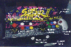
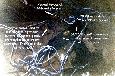

Controls
The Keyboard - Another tough one!
After several experimentation with various joysticks like Gravis Gamepad, Gamepad Pro, analog joysticks, and joystick emulators like JOYEMU from Simone Zanella I finally came to the conclusion that I would simply wire a standard PC keyboard to the controls. Easy enough, right? Wrong!
First off, the joysticks are okay, but really you have to hack up one or two or them in the first place. Joysticks and PC joystick ports are still based on IBM's original XT model which came with an analog joystick. So to build your own joystick circuit is somewhat complicated even if you just want digital output like a gamepad. It requires several resistors, etc. and basically it just easier (and probably about the same price once you're done) to just hack up a couple of cheap gamepads and wire them to your keyboard.
Of course, this whole XT compatibility thing leads to these facts:
So joystick/gamepad interface is probably not too good of a solution if you want to play games which require more buttons. Of course there are other gamepads which offer more buttons like the MS-Sidewinder, Gravis Gamepad Pro, etc. All of these use a DOS TSR or a Windows 95 program to generate keystrokes instead of actual joystick impedances. Which is fine, unless:
So what's the only common interface between all of the games? The keyboard!
OK. So to provide the most compatibility with your games, you will probably want to choose the default MAME action buttons and controls since the number of MAME ROMs will probably outnumber all the other games combined on your system about 20:1. Alright. So it's easier to assign CTRL, ALT, SPACE, LSHIFT, Z, and X to the six action buttons of player 1 than to reprogram/customize every bloody MAME game on your system to accept alternate keys. Except ALT, SPACE, and LSHIFT don't work with some emulators like the Bloodlust emulators --- Genecyst, NESticle, and Callus. Instead, I've opted to use C, V, B, and N instead in place of MAME's four defaults CTRL, ALT, SPACE, LSHIFT leaving the rest as MAME defaults.
Now, in planning the control panel I simply planned to use the default MAME key set which looks like this:
|
Set |
Control |
Keyboard Mapping |
|
Player 1 |
Up |
Grey Up Arrow |
|
Right |
Grey Right Arrow |
|
|
Down |
Grey Down Arrow |
|
|
Left |
Grey Left Arrow |
|
|
Action 1 |
C |
|
|
Action 2 |
V |
|
|
Action 3 |
B |
|
|
Action 4 |
N |
|
|
Action 5 |
Z |
|
|
Action 6 |
X |
|
|
Player 2 |
Up |
R |
|
Right |
G |
|
|
Down |
F |
|
|
Left |
D |
|
|
Action 1 |
A |
|
|
Action 2 |
S |
|
|
Action 3 |
Q |
|
|
Action 4 |
W |
|
|
Action 5 |
T |
|
|
Action 6 |
Y |
|
|
Other Controls |
Player 1 Start |
1 |
|
Player 2 Start |
2 |
|
|
Miscellaneous |
Enter |
ENTER |
|
Escape |
ESC |
|
|
Tab |
TAB |
|
|
Pause |
P |
|
|
Left Coin |
3 |
|
|
Right Coin |
4 |
I wasn't sure how this was going to work with everything else, exactly, but I assumed that the other emulators and games would have a keyboard remapping function to customize controls. You see, other emulators besides MAME have global settings which can be modified through the GUI, or some sort of configuration file like SYSTEM16.INI. This way, you can change the inputs for a series of games with one setting change. MAME works differently in that each game is unique and had unique hardware. So each ROM has to be configured individually as opposed to just once for any other emulator. Get it?
Alright, now the deal is… originally I was just going to use the original JAMMA socket to interface to my homemade JAMMA board (see harness section) so as not to destroy the original wiring and to be able to connect the original hardware again by just swapping the socket with my board vs. the original Street Fighter II JAMMA board.
Fat chance of that though. You see the JAMMA board is built simply by using one common lead and single, sepearate leads for each control/button. After ripping apart my keyboard with a bad "M" key I noted that PC keyboards don't work this way. My keyboard (they all seem to be a little bit different inside) happened to have a 13x13 grid. That is 13^2 combinations, or 169 keyboard combinations. Plenty for those 104-Enhanced keyboard specs. What a drag. Alright. "So just solder the wires to the template under the keys," you say? Can't. They are all plastic underneath. You'll just end up melting the plastic and ruining a perfectly good keyboard. So you'll have to solder directly to the IC board.
What all this means is that you will have to do the following:
You probably realize by now that you could end up with several combinations. Some will have common leads if they are in the same physical region of the keyboard. (i.e. the "3" and "4" keys happen to share a common lead.) Also, I would recommend buying one male DB-25 connector and one female DB-25 connector. This allows you to wire the keyboard IC unit to the female connector, as to not short the keyboard leads out on anything metal. (Because there are no penis' on a female connector, dummy.) And use the male connector to interface to the control panel. This way, you can disconnect the control panel if you have a problem. Yes, it makes three times the number of soldering points over just wiring directly to the control panel from the keyboard IC board, but if you're gonna do it, do it right so you won't have problems and can troubleshoot easier. Again, DON'T do a farmer's job!
So eventually, you're gonna end up with a big wire mess which should look similar to these…
But if you did it right, then it should last you for years until you finally lose that "ol' nostalgia" and mothball your little ~$1,500 project.
Keyboard Interfacing - Problems
At first I thought the keyboard idea was working exceptionally well. It was nice to have the ALT & CTRL key in combination with X and Q, since many PC games require this key combination to exit them. What I did have problems with were the following:
How does one get around these problems? NOT easy.
One option is to remap the first four Player 1 keys from CTRL/ALT/SPACE/LSHIFT to C/V/B/N. This would work with everything on the system, but you would have to sit down with a pack of smokes for the day as it would probably take you several hours to reprogram all the MAME ROM keyboard controls.
The other options?
I gave the assembly code to a "bloak" from Australia, by the name of Todd. Todd and his buddy, Jason were quite interested in my success in connecting my CRT to my PC and making it work and we have exchanged several ideas on many aspects of this new hobbie since first contact.
Todd seems to know his stuff on assembly and keyboard TSR's. I hope he can come up with a keyboard solution.
As of yet, I haven't been able to get JOYCP (part of JOYEMU) to run on my "arcade" computer to calibrate the gamepad. Calibration is necessary in order to start remapping joysticks to keystrokes.
Also, I un-soldered all of the previous wires connecting the Player 1 joystick and the first four action buttons which were previously connected to the keyboard interface. And as I stated before, I lost the paper with all the keyboard key cross-references on it. So now, I can't even play a game, and I really don't want to go back to the way I had it since some emulators don't like some of my default key controls.
C'mon, Todd. Work some magic.
If anyone has anything to offer on this, please drop me an e-mail from the Main Page. Thanks.
Mouse/Trackball Interface
Shortly after purchasing my Street Fighter II cabinet I went and bought a used trackball for $10. I cleaned it up and serviced it a bit. However, I could not seem to interface its electronics to an old mouse (with a screwed rubber ball) that I had. I had read of others snapping of bits of their mouse boards and connecting them to trackballs, and the likes, but that seemed cheesy to me. Besides, I didn't have anymore room on the control panel to put the thing in anyway. It's huge. I was appalled to read that one guy even melted several "toy soldiers" together with a soldering iron to hold a mouse under his control panel which was "krazy-glued" to a metal shaft for use as a "TRON-like" spinner! Man, how long would that really last?
So giving up on this aspect, I just decided to order Logitech's (there are no other comparable brands for a PC mouse than Logitech) Trackman Marble. It sports 3 buttons, and no stupid "window-scroll wheel" (unless you get the "+" model) and a "frictionless" trackball. It works by scanning the dots passing by on the surface of the ball. Really cool. It worked great. I just drilled one hole in the back of it, screwed a large bolt through the plastic, put it back together, and slid the bolt through a drill hole in the control panel. After tightening it up with a nut underneath, it has not moved even a millimeter, ever, and works excellently. Great for Mech Warrior and the likes!
In the end...
I ended up using 2 Gravis Gamepads wired to the joysticks and the first two actions buttons for each player, and the rest to the keyboard. Some games don't accept keyboard control very well or in some cases, at all. So I use JOYEMU to change keystrokes the joysticks produce. For example, under QuickMAME I assign both joysticks: UP, DOWN, LEFT, RIGHT for the directionals and ENTER and ESC for the two action buttons. This way I can use either stick to scroll through the list and select a game or exit the menu. Conversely, I modify the batch file that loads MAME to switch the joystick keystroke output to UP, DOWN, LEFT, RIGHT, C, V for player 1 --- and R, F, D, G, A, S, for player 2, respectively. For games that require ONLY joystick input I simply include "JOYEMU -" to the batch file to disable keystroke emulation. This way the keystrokes don't interfere with PC games that require ONLY joystick input, etc.